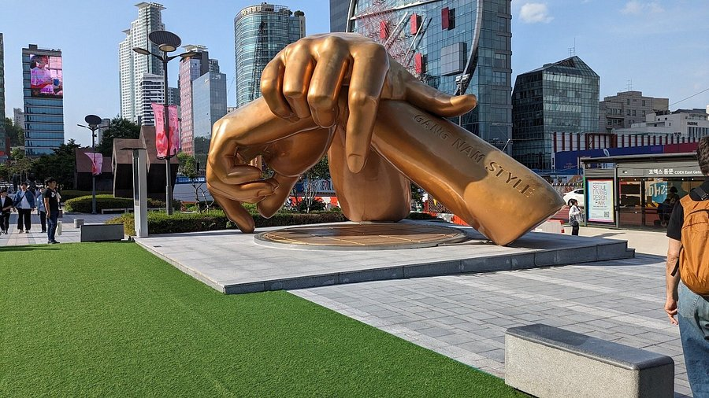
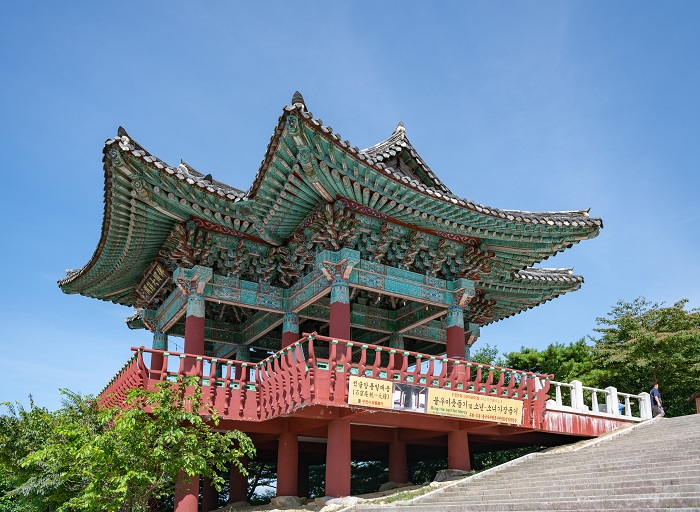
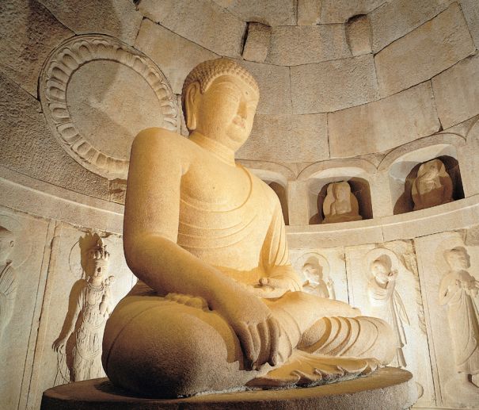
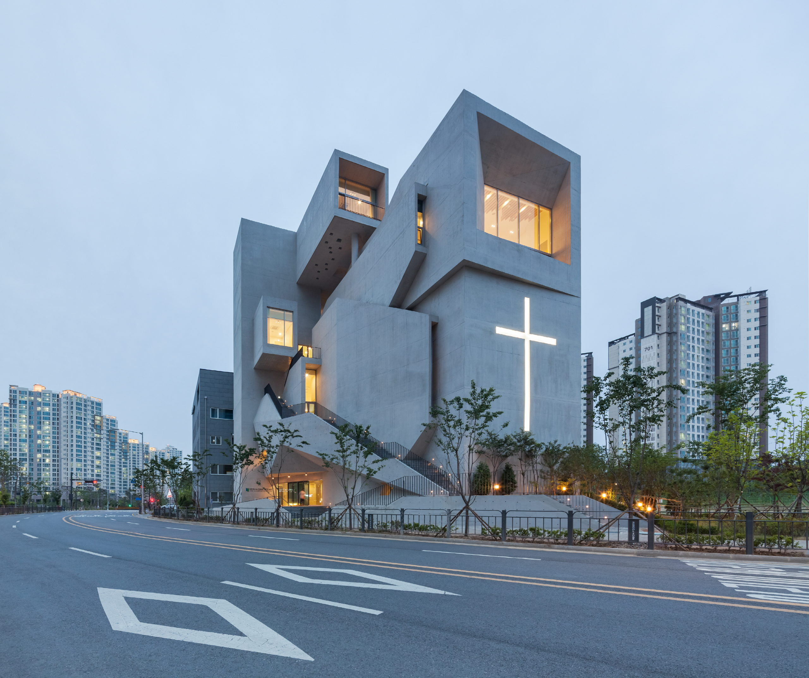
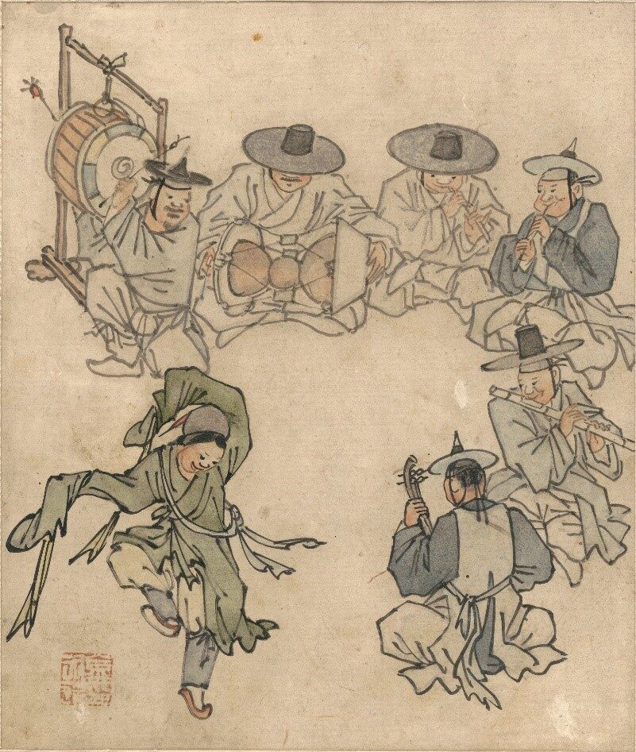
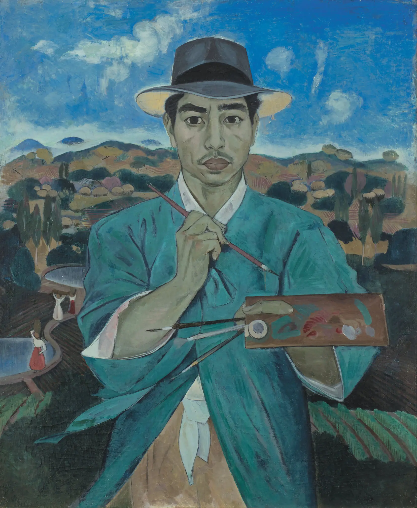
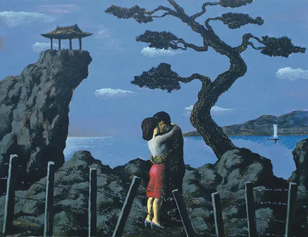

BTS is an iconic k-pop band known throught the whole world. BTS, also known as the Bangtan Boys, is a South Korean boy band formed in 2010. The band consists of Jin, Suga, J-Hope, RM, Jimin, V, and Jungkook, who co-write or co-produce most of their material. If you are interested in fashion, I recomend you to shop for Hanbok (a traditional korean dress).
The Arts Hanbok Some more modern works of art.PSY is famously known for his song Gangnam style released in July on 2012. Gangnam style became a hit song world-wide and is honored with a large hand statue in Seoul.
The Buddha statues are a common tradition throughout Asia. Sakyamuni Buddha who represents the present world is located in the Bulgaska temple. A historical buddhist temple that attracts many tourists. Christianity is also a common religion among over 50% of the population.
  Min Joung-ki’s painting “Embrace,” from 1981. The artist probed the sociocultural history of South Korea, often drawing imagery from kitschy art sold in the streets of Seoul. Another great painting is a self portrait made with water color. My favorite is the couple by the sea saying goodbye.
  